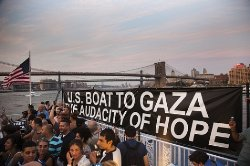
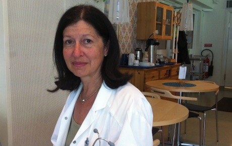

پذيرش > اخبار > زنان در ناوگان آزادی به سوی شکستن محاصره غزه


 زنان در ناوگان آزادی به سوی شکستن محاصره غزه زنان در ناوگان آزادی به سوی شکستن محاصره غزه
11 تیر 1390 - ترجمه : شهرزاد امین - نسخه قابل چاپ
تغییر برای برابری: کاروان ناوگان آزادی برای شکستن محاصره غزه برای دومین سال متوالی در پایان ماه جون جاری به حرکت در خواهد آمد. سال گذشته از کشور سوئد نویسندگان مشهور ، پزشکان، پژوهشگران و نمایندگان احزاب سیاسی در مجلس در یکی از این کشتیها حضور داشتند. آنان توسط ارتش اسرائیل مورد ضرب و شتم قرار گرفته ودستگیر و زندانی شدند. این خبر انعکاس وسیعی در مطبوعات سوئد یافت. امسال نیز در آستانه حرکت ناوگان جدید، مطبوعات و رادیو وتلویزیون گزارشات متعددی را از کاروان ناوگان منتشر کرده اند. تارنمای سوئدی پرسپکتیو فمینیستی نیز به مصاحبه با دو تن از سرنشینان زن پرداخته است.
رویا به واقعیت پیوسته بود و 6 کشتی در دریای مدیترانه غوطه ور بودند. این کشتی ها در همبستگی با مردم فلسطین، به سوی هدفی مشترک، شکستن محاصره غزه، در حرکت بودند و یکی از سرنشینان این کشتیها پزشک ارشد ویکتوریا استراند بود. وی می گوید اگر به علت ترس همراهی نمی کردم یک فرصت تاریخی را از دست داده بودم، کاری را که همه عمرم دلم می خواست انجام بدهم. یک شبانه روز فکر کردم و سپس تصمیم خودم را گرفتم
کسی می بایست از وضعیت مردم غزه حرف بزند، در کنارشان باشد و به اشغال این کشور توسط اسرائیل نه بگوید. روزنامه نگار مراکشی تصمیم گرفته است تا بر روی ظلمی که بر مردم غزه می رود چشم نپوشد و به ناوگان آزادی غزه بپیوندد.
اوسیما ابن صالح از پاسیو بودن سازمان ملل متحد در مقابل اشغال کشور فلسطین خسته شده است. از نظر وی نظاره گری مردم جهان در کشتار مردم غزه در جنگ 22 روزه 2008 - 2009 ، بدتر از هر چیز دیگری بود ، مردم جهان شاهد قتل عام کودکان بودند و اقدامی در جهت پایان دادن به اشغال این کشورانجام ندادند.
اوسیما می گوید -معنا و مفهوم این محاصره این نیست که فقط مردم غزه کشته می شوند بلکه این به این معناست که قوانین بین المللی نیز نقض می شود. من می دانستم که افراد محدودی حاضر به پذیرفتن خطرهای جانی و دوری ازخانه و خانواده هایشان برای بودن در کنار مردم فلسطین هستند. من می خواستم یکی از آنان باشم، وقتیکه جهان هنوز کور است کسی می بایست این تاریخ را بازگوئی کند و بگوید بس است و من می خواهم یکی از آنان باشم.
او در حال حاضر در بخش مطبوعات یک سازمان غیر دولتی ترکی که برای دومین بارکاروان ناوگان آزادی غزه را سازماندهی می کند مشغول به کار است. – من در امور حقوق بشر و کمک به انسانها خیلی فعال هستم. از نظر من روزنامه نگاران می بایست مشی بی طرفانه ای را اتخاذ کنند اما وقتیکه انسانها در نابرابری، جنگ، محاصره و تحت اشغال زندگی می کنند، حتا خبرنگاران نیز نمی توانند هویت انسانی خود را فراموش کنند. من می خواهم با نوشتنم امید بیافرینم، انگیزه ایجاد کنم و برای دنیای بهتری مبارزه کنم.
در سازمانی که اوسیما کار می کند هم زنان و هم مردان فعال هستند. اما تعداد زنان بیشتر و فعالتر هستند و اوسیما علت آن را در مادر، خواهر و دختر بودن آنان می جوید. او باور دارد که وجود زنان که ترکیبی از منطق و احساس است نوع خاصی از همبستگی و کار طاقت فرسا را می آفریند و ترویج میدهد.
ویکتوریا استراند پزشک ارشد و متخصص آسم و آلرژی در بیمارستان سانت یوران در استکهلم مشغول به کار است. وی 59 ساله، صاحب 3 فرزند و 2 نوه می باشد. او یکی از سرنشینان کشتیهای آزادی غزه (شیپ تو غزه) بود که در ماه جون سال گذشته مورد حمله سربازان اسرائیلی قرار گرفت. او در سال جاری به سمت سخنگوی گروه شیپ تو غزه در سوئد برگزیده شد. ویکتوریا به همراه 30 سرنشین دیگر در کشتی سوفیا بود. او می گوید – من از حمله اسرائیلیها به مردم غزه در سال 2008 خیلی عصبانی شدم. علم به اینکه نیمی از مردم غزه، یک و نیم میلیون نفر، زیر 16 سال هستند. می شود فهمید که چه تعداد زن و بچه در آن روزها مورد حمله واقع شدند، بدون هیچگونه امکان پناه گرفتن. از نطر وی این حمله اسرائیل فوق العاده بود چرا که اسرائیل هیپگونه اوردوگاهی را برا ی مردم عادی در آن روزها دایر نکرد. کاری که در چنین شرایطی معمول است و راهی برای فرار مردم باز گذاشته می شود. 1400 نفر جان خود را از دست دادند که 400 نفر آن را بچه ها تشکیل می دادند. ملتی به این شدت مجازات می شوند و در آن طرف فقط 9 نفر جان خود را از دست می دهند. من نمی توانستم این را بپذیرم.

ویکتوریا به همراه تعدادی از دوستانش این مسئله را به بحث گذاشت که آیا می توان از زاویه حقو ق بین الملل این موضوع را پیگیری کرد. آنان با همدیگرفعالیتها ئی را شروع کردند و درمسیر این فعالیتها در ارتباط با سازمان شیپ تو غزه قرار گرفتند. – یک جنبش مردمی که انسانها فرای اعتقاداتشان، با اهدافی سیاسی و انسانیدر مسیر هدفی مشترک در آن جمع شده بودند. از آنان سوال کردم آیا به پزشکی در کشتیشان احتتیاج داشتند که پاسخ مثبت بود. او به یکباره در مقابل یک واقعیت عینی قرار گرفته بود. - با خودم خیلی فکر کردم، می بایست از خانواده ام جدا می شدم و نمیدانستم آیا بر می گردم یا نه. نمی دانستم اسرائیلیها چه نقشه هائی را در سر داشتند. اما این حرکت برای من بیان مشخص و روشنی از همبستگی بود. و ما بالاخره در آنجا بودیم، جنوب قبرس. فقط ما و دریای مدیترانه. ما در این کشتی ها در کنارماشینهای باری قرار گرفتیم. پیرمردهای یونانی با کمربندهای قرمز و شکم بزرگ، دختران جوان با زیور آلاتشان همه در کنار همه به سوی یک هدف مشترک در حرکت بودیم. ما می خواستیم محاصره غزه را بشکنیم. در طول شب سربازان اسرائیلی به کشتی ترکی ماوی مرمره حمله کردند. ویکتوریا صدای شلیکها و فریادها را شنید. سپس هلی کوپترها از همه طرف شروع به حمله کردند. بعد از آن کشتی صوفیا محاصره شد. – به ما گفتند اگر برنگردیم به ما شلیک خواهند کرد. از کشتی بالا کشیدد و وارد آن شدند. با گلوله های پلاستیکی به آنهائی که سر راهشان قرار گرفتند شلیک کردند. مسئول آکتیویستهای یونانی فریاد زد " شما دزدان دریائی هستید، ما یونانی هستیم و بیش از 4000 سال در آبهای مدیترانه پارو زده ایم، اینجا جای شما نیست، شما جانیان جنگی هستید."
آیا هرگز نترسیدی؟ ویکتوریا به سرعت پاسخ می دهد من روی وظیفه خودم متمرکز بودم. با خودم فکر کردم " این سربازان جوان اسرائیلی چه جوری فکر می کنند؟ بسیاری از ما در آن کشتیها می توانستیم به جای پدر و مادر آنها باشیم. حتمن به آنان گفته شده بود که ما تروریستهای خطرناکی بودیم".
ویکتوریا پس ازسپری کردن دو روز در زندانهای اسرائیل به سوئد برگشته و از کشته شدن 9 تن از سرنشینان ماوی مرمره به دست سربازان اسرائیلی مطلع شد. – خیلی وحشتناک و برای من غیر قابل باور بود.
شیپ تو غزه مجددن آماده حرکت به سوی غزه است و ویکتوریا میگوید اگر جائی برای من باشد آن را همراهی خواهم کرد. – از نظر من نسبت به سال گذشته تغییرات محدودی صورت گرفته است. در شرق اورشلیم همچنان جابجائی مردم غیر ممکن و دسترسی شان به امکانات درمانی محدود است. محدوده ما هیگیری برای مردم فقط 3 مایل دریائی است. 90 درصد از خواسته هائی که ما در سال گذشته برای بر آورده شدنشان حرکت کردیم برآورده نشده اند. به همین دلیل معتقدم که بایستی دوباره حرکت کرد.
داده هائی در مورد ناوگان کمک رسانی به غزه
کاروان ناوگان آزادی از طرف سازمانهای بین المللی مستقل در کشورهای مختلف سازماندهی می شود و هدفش شکستن محاصره 4 ساله غزه است. کاروان سال جاری بزرگتر از سال گذشته است. حداقل 12 کشتی بامحمولات ابزار ساختمان سازی و وسایل درمانی آماده حرکت از جنوب قبرس به سمت غزه در روزهای پایانی ماه جون است. سرنشینان این ناوگان را حدود 700 نفر از آمریکا، اروپا و ترکیه تشکیل می دهند
ارسال به
بالاترین
،
توییتر
،
فریندفید
،
فیسبوک
در همين بخش :
 پروین ذبیحی برنده جایزه حقوق بشری سازمان غيردولتى اتريشى سودويند شد پروین ذبیحی برنده جایزه حقوق بشری سازمان غيردولتى اتريشى سودويند شد
پخش کارت پستال و بروشور در روز جهانی زن در تهران
تمدید زمان برای امضای بیانیهی جمعی از فعالان زن به مناسبت هشت مارس
مجوزی که در نطفه خفه شد
بیش از 2000 امضا در اعتراض به تبعیض های آموزشی به مجلس تحویل داده شد
ديگر بخش ها :
طرح یک میلیون امضا
|
مقالات
|
سایت نوشته ها
|
اخبار
|
گزارش كمپين
|
گفت و گو
|
علیه سکوت
|
كوچه به كوچه
|
نامه های شما
|
گزارش ویژه
|
گفتگو با اعضا
|
ویژه سالگرد کمپین
|
تصویر برابری
|
دل آرام علی
|
تریبون
|
مقالات
|
تاریخ شفاهی
|
خارج از چارچوب
|
کتابخانه
|
درباره کمپین
|
کمپین در شهرها
|
کمپین در بند
|
صدای تغییر
|
ویژه 22 خرداد
|
لایحه حمایت از خانواده
|
گالری
|
عشا مومنی
|
امیر یعقوبعلی
|
خدیجه مقدم
|
راحله عسگری زاده و نسیم خسروی
|
پروین اردلان،جلوه جواهری، مریم حسین خواه، ناهید کشاورز
|
زینب پیغمبرزاده
|
سعیده امین، سارا ایمانیان، محبوبه حسین زاده، ناهید کشاورز و همایون نامی
|
احترام شادفر
|
نسیم سرابندی زاده،فاطمه دهدشتی
|
وبلاگ مهمان
|
پرونده خرم آباد
|
دستگیری ها
|
مریم مالک
|
پرستو اللهیاری
|
مهرنوش اعتمادی
|
سمیه رشیدی
|
Other Languages
|
همراهان
|
«فراخوان کمپین ده روز با بهاره هدایت»
| English
|